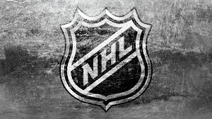
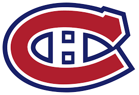

Founded in 1909, the Montreal Canadiens—affectionately known as the "Habs"—are the longest continuously operating professional ice hockey team in the world and the only NHL club that predates the league's founding in 1917. As a cornerstone of the "Original Six" era, the franchise boasts an unmatched record of 24 Stanley Cup championships, with their last title in 1993 marking the most recent time a Canadian team won the cup. Playing at the Bell Centre, the team is deeply rooted in French-Canadian culture, serving as a symbol of pride, passion, and historic excellence in professional hockey.